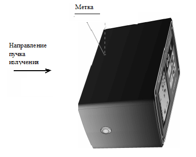
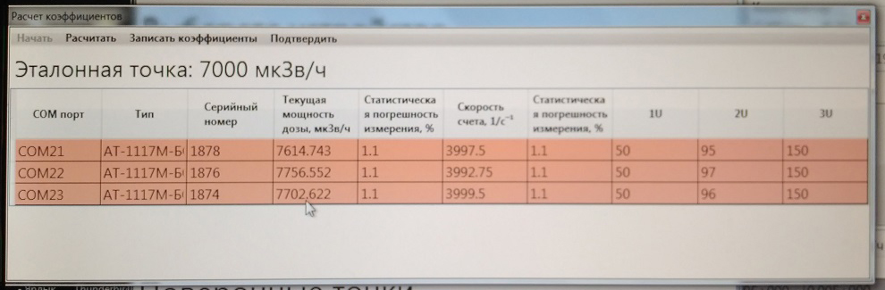

Градуировка БОИ
ЛИНЕЙНОСТЬ
Установить 4 шт. БОИ в держателе на поверочную дозиметрическую установку УДГ-АТ130 таким образом, чтобы центральная ось коллимированного пучка гамма-излучения установки была перпендикулярна задней стенке, а расстояние от источника до центра детектора было выставлено по красной метке на верхней поверхности БОИ.
Важно! БОИ с СБМ-21,СИ19 и М07BY оцифровываются по-разному.
Во избежание ошибки градуируйте только один тип счетчика!
Во избежание ошибки градуируйте только один тип счетчика!
Подсказка:
- до 2012 года БОИ имели в составе СБМ-21;
- с 2012 по 2019 - СИ19;
- с 2019 - М07BY.
Следите за метками на корпусе и скоростями счета в 4 режиме (СБМ-21 и М07BY — 0,05с-1, СИ19 — 0,20с-1)

- до 2012 года БОИ имели в составе СБМ-21;
- с 2012 по 2019 - СИ19;
- с 2019 - М07BY.
Следите за метками на корпусе и скоростями счета в 4 режиме (СБМ-21 и М07BY — 0,05с-1, СИ19 — 0,20с-1)
На пульте управления КС-АТ130 нажать оцифровку в окне Х оцифровки

Далее нажать и

- Подключить БОИ к ПК
- Запустить ПО АТ1117М_Utility
- Нажать Поиск
- Выбрать нужные для калибровки БОИ галочками в разделе использовать
- Выбрать Калибровка
- Выбрать тип БОИ
- Выбрать тип счетчика
- Нажать Произвести измерение
- В появившемся окне выбрать Тип точки – Градуировочная точка
- Выбрать первую (точка 20мкЗв/ч или 100 мкЗв/ч) градуировочную точку
- Нажать Начать в окне Параметры автонастройки
Нажать Начать в меню окна расчет коэффициентов
- Запустить ПО CalculationSources
- Рассчитать расстояние для H*(10)
- Установить источник 137Cs и расстояние согласно расчету программы
- Градуировать показания выставив коэф 3U ≈100
- Дождаться хорошей статистики 2-5 %
- Нажать Записать коэффициенты
- Выбрать вторую (точка 7 мЗв/ч или 70 мЗв/ч) градуировочную точку
- Нажать Начать в окне Параметры автонастройки
Нажать Начать в меню окна расчет коэффициентов
- Установить источник 137Cs (точка 7 мЗв/ч или 70 мЗв/ч)
- Градуировать показания выставив коэф 4U
- Дождаться хорошей статистики 2-5 %
- Нажать Записать коэффициенты
Выйти в раздел
- Снять ПСИ
- Выбрать Тип точки — Поверочная точка
Данные переписать в электронный журнал градуировки
ЭНЕРГЕТИКА
Установить 4 шт. БОИ в держателе на поверочную дозиметрическую установку УДГ-АТ110 таким образом, чтобы центральная ось коллимированного пучка гамма-излучения установки была перпендикулярна задней стенке, а расстояние от источника до центра детектора было выставлено по красной метке на верхней поверхности БОИ.Важно! БОИ с СБМ-21,СИ19 и М07BY оцифровываются по-разному.
Во избежание ошибки градуируйте только один тип счетчика!
Во избежание ошибки градуируйте только один тип счетчика!
Подсказка:
- до 2012 года БОИ имели в составе СБМ-21;
- с 2012 по 2019 - СИ19;
- с 2019 - М07BY.
Следите за метками на корпусе и скоростями счета в 4 режиме (СБМ-21 и М07BY — 0,05с-1, СИ19 — 0,20с-1)
- до 2012 года БОИ имели в составе СБМ-21;
- с 2012 по 2019 - СИ19;
- с 2019 - М07BY.
Следите за метками на корпусе и скоростями счета в 4 режиме (СБМ-21 и М07BY — 0,05с-1, СИ19 — 0,20с-1)
- Проверить 241Am 1м, 60Со 10 мкЗв/ч
- Запустить ПО CalculationSources
- Рассчитать расстояние для H*(10)
Данные переписать в электронный журнал градуировки